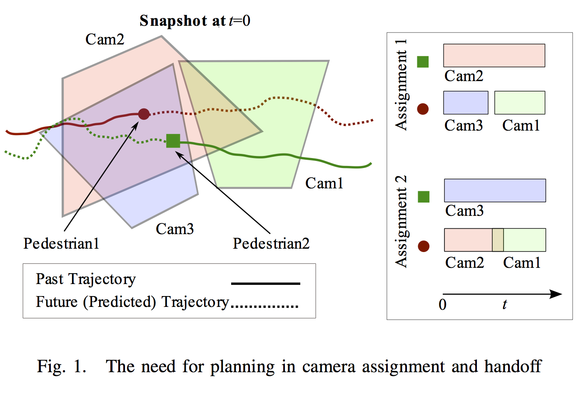

Proactive PTZ Camera Control

In Fig. 1, assignment 1 is reactive. Here, the cameras do not take into account the future effects of their current assignments, which leads to observation failures when the pedestrian depicted as the red circle is handed-off from camera 3 to camera 1. Planning allows the three cameras to observe the two individuals—depicted as red circle and green square—without any interruptions (assignment 2).
Movies
Cameras Handoffs using Planning [video1, video2]
Three cameras decide among themselves how best to observe two pedestrians as they cross each other. One of the three cameras assists the other two in performing a successful handoff. It goes back to idle once the handoff is complete. Its role is similar to that of a temporary variable when values of two variables are swapped.
Planning Ahead for Camera Assignments
"Planning Ahead for PTZ Camera Assignment and Control,'' F.Z. Qureshi, Demetri Terzopoulos, Proc. Third ACM/IEEE International Conference on Distributed Smart Cameras (ICDSC 09), Como, Italy, August, 2009, 1—8.
Abstract
We present a visual sensor network, comprising wide field-of-view (FOV) passive cameras and pan/tilt/zoom (PTZ) active cameras, which automatically captures high quality surveillance video of selected pedestrians during their prolonged presence in an area of interest. A wide-FOV static camera can track multiple pedestrians, while any PTZ active camera can follow a single pedestrian at a time. The proactive control of multiple PTZ cameras is required to record seamless, high quality video of a roaming individual despite the observational constraints of the different cameras. We formulate PTZ camera assignment and handoff as a planning problem whose solution achieves optimal camera assignment with respect to predefined observational goals.
Learning Proactive Control Strategies for PTZ Cameras
"Learning Proactive Control Strategies for PTZ Cameras,'' F.Z. Qureshi, W. Starzyk, Proc. 5th ACM/IEEE International Conference on Distributed Smart Cameras (ICDSC 11), Ghent, Belgium, August, 2011, 1—6.
Abstract
This paper introduces a camera network capable of automatically learning proactive control strategies that enable a set of active pan/tilt/zoom (PTZ) cameras, supported by wideFOV passive cameras, to provide persistent coverage of the scene. When a situation is encountered for the first time, a reasoning module performs PTZ camera assignments and handoffs. The results of this reasoning exercise are 1) generalized so as to be applicable to many other similar situations and 2) stored in a production system for later use. When a "similar” situation is encountered in the future, the production-system reacts instinctively and performs camera assignments and handoffs, bypassing the reasoning module. Over time the proposed camera network reduces its reliance on the reasoning module to perform camera assignments and handoffs, consequently becoming more responsive and computationally efficient.